ASOCIATIA NATIONALA A SALVATORILOR MONTANI DIN ROMANIA
PROCEDURI ȘI TEHNICI DE BAZĂ ÎN SALVAREA MONTANĂ
. Materiale auxiliare pentru operaţiunile de salvare
Role
Rolele sunt materiale indispensabile unei echipe de salvare, deoarece cu ajutorul lor se efectueaza diferite sisteme de elevare si tehnici de transport pe orizontala.
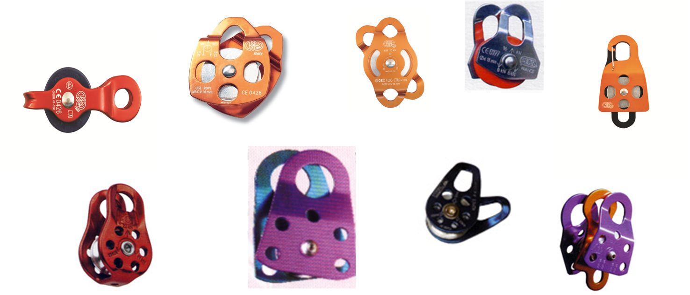
Role duble

În decursul anilor au apărut pe piaţă diverse tipuri de blocatoare. Important este că toate se bazează pe acelaşi principiu: sub tensiune, ele blochează coarda, iar fără tensiune, alunecă pe coardă. Se folosesc la: urcări pe coardă, . Iar Într-un ansamblu de blocatoare cu role se realizeaza sistemele de elevare si salvare din abrupt si zona accidentaata
Blocatoarele in ultimi ani au avut o evolutie foarte mare si sau creat noi tipuri atat pentru deplasarea pe coarda fixa cat si pentru simplificarea sistemelor de elevare asigurare si autoasigurare
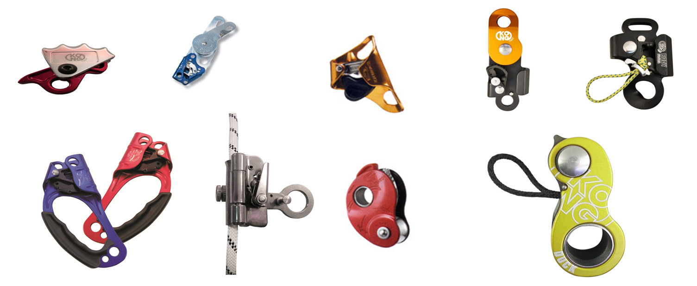
Dispozitive de coborare pe coarda fixa
Acest material are multiple întrebuinţări, dintre care principale sunt:
asigurarea în deplasare a coechipierilor.
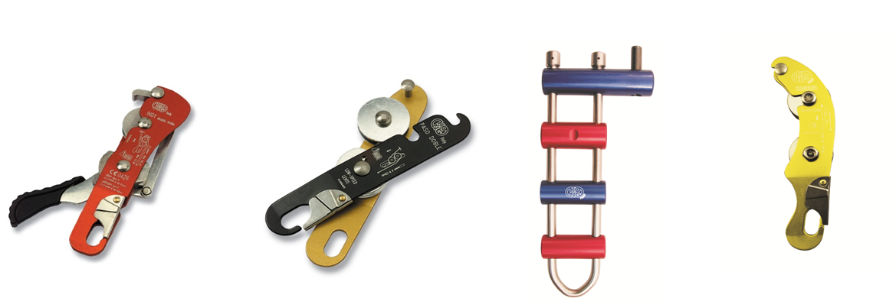
OPT-ul
Metoda de asigurare cu opt-ul aplică modelul nodului de rapel. Este o metodă destul de sigură, însă necesită foarte mare atenţie în cazul căderilor grele a capului de coardă.
Mâna poate bloca coarda până la sarcini de 2 KN.(~200 Kg.)*.
Forţa de frânare este cu atât mai mare cu cât mâna care frânează se află mai aproape de opt sau dacă se frânează cu ambele mâini, rolul cel mai important fiind deţinut de mâna aflată după dispozitivul de frânare.
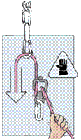
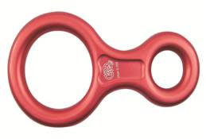
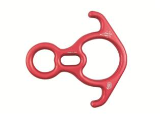
Dispozitive de lansare recomandate a fi folosite in sistemul de salvare

Placute repartitoare
In activitatea de salvare montana in teren variat de multe ori suntem nevoiti de a efectua ateliere complexe de elevare si lansare unde aceste placute fixate la un punct de forta (amaraj) ne creaza posibilitatea efectuari liniare a atelierelor de salvare

PLĂCUŢE DE ASIGURARE ( METODA STICHT)
Această metodă destul de răspândită, foloseşte o plăcuţă (cu o gaură ovalizată) confecţionată din duraluminiu. Dimensiunea găurii trebuie să corespundă cu diametrul corzii folosite. Prin gaură se va trece coarda de asigurare, formând astfel o buclă. În bucla corzii se introduce o carabinieră cu filet care la rândul ei este legată de ham.
Distanţa dintre plăcuţă şi carabinieră trebuie menţinută constant la circa 10 cm. În caz de solicitare, plăcuţa se apropie de carabinieră, obţinându-se astfel efectul de frână.
Mâna poate bloca coarda până la sarcini de 2.5 KN.(~250 Kg.)*.
Forţa de frecare este cu atât mai mare cu cât mâna care frânează se află mai aproape de plăcuţă sau dacă se frânează cu ambele mâini. Dezavantajul acestei metode este faptul că la solicitare puternică (cădere cap de coardă), coarda este gâtuită în plăcuţă.
DIFERITE TIPURI DE PLACUTE

DISPOZITIVUL GRI-GRI
La căderile importante forţa de soc depăşeşte uşor 3-4 KN iar în cazul folosirii opt-ului, plăcuţei Sticht sau a semicabestanului mâna nu mai poate ţine sarcina şi începe să scape coarda. În final căderea mai poate fi oprită prin frânare dar există riscul ca spaţiul de cădere să crească periculos datorită unei frânari slabe din partea coechipierului ce se teme să nu îşi ardă mâinile.
Acest risc nu există cu un dispozitiv GRI-GRI. Omologat de UIAA, se blochează la şoc şi începe să scape coarda de la valori ale forţei de şoc mai mari de 9 KN (pentru a nu fi depăşite normele suportate de echipament) permiţând asiguratorului să execute frânarea căderii.
Este recomandat numai în traseele pentru escaladă sportivă echipate cu pitoane forate (spituri), întrucât solicită mult mai mult pitoanele la cădere decât celelate metode de asigurare. Valorile sunt date pentru cazul în care se asigură fără mănuşă pentru mâna aflată în urma dispozitivului de frânare. Este însă foarte recomandabilă purtarea unei mănuşi de piele (mai ales la începători) pentru evitarea arsurilor mâinii şi implicit a urmărilor măririi distanţei de cădere

1.Troliu
Troliul este un utilaj specializat pentru cazurile în care este nevoie de forţă pentru sarcini mari, în special la recuperarea accidentatilor din pereţi. Funcţionează cu corzi statice sau cu cabluri de oţel.Aceste troli in functie de teren se pot monta pe diferite trepiede sau catarge
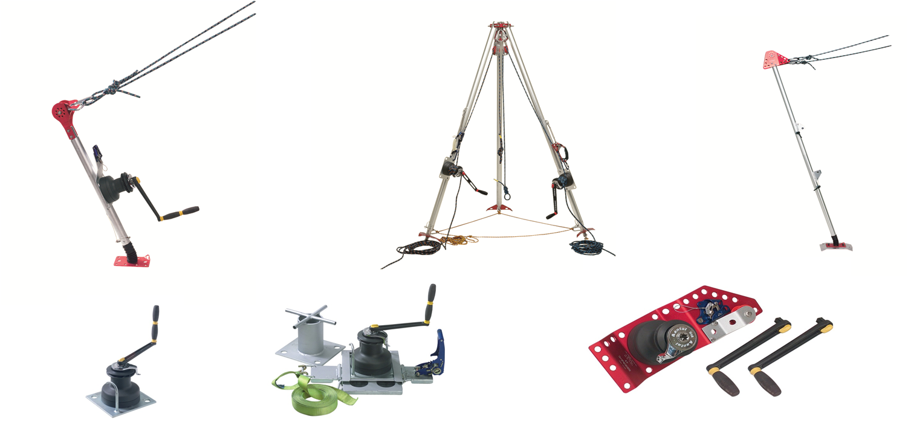
Targi pentru transportul accidentatului pe timp de vara
Targa UT2000 este un utilaj modern de folosinţă universală. Pentru transportul accidentatilor indiferent de anotimp teren accidentat sau apa, targa este prevăzută cu 2 roţi care uşurează foarte mult transportul pe timp de vara in teren variat.si 4 patine pentru transport pe timp de iarna.
Targa este compusă din două părţi (fig.55) care se asamblează (fig.56). Are o greutate totală (cu toate accesoriile) de 9 kg.
Este omologată pentru toate tipurile de transport al accidentaţilor inclusiv cu elicopterul .
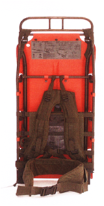
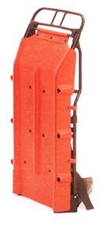
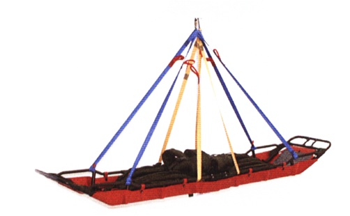
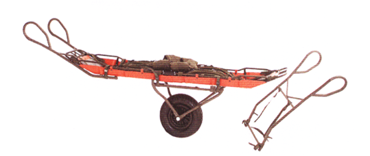
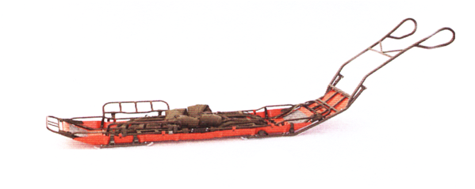
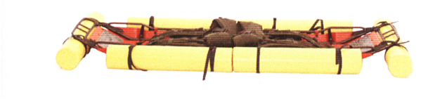
Targa de transport cu roata Maryner si Tiromont
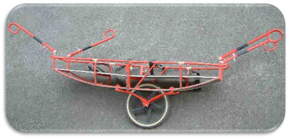
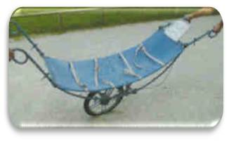
Sacul de transport TIROMONT
Sacul de transport Tiromont este folosit la evacuarea victimelor din zone aflate pe verticală. Se poate folosi şi la transportul cu elicopterul.(saci de transport obligatoriu vor fi echipati si cu planuri rigide xempku A si-B)
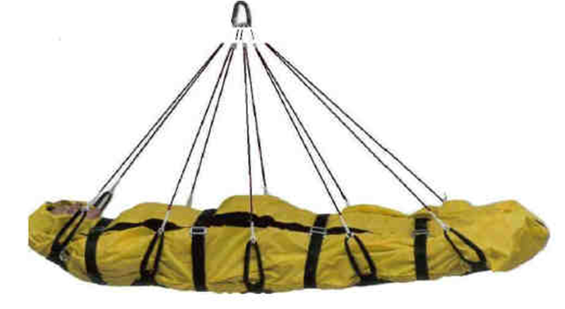


Targa rigida modulara Haga
Targa rigida Baxstrep
tiromont
Saltea cu vacuum
Salteaua cu vacuum se foloseşte la transportul accidentaţilor care au suferit traumatisme ale coloanei şi bazinului asigurând o imobilizare foarte buna.


Există de asemenea atele cu vacuum foarte utile în cazul traumatismelor membrelor superioare şi inferioare.
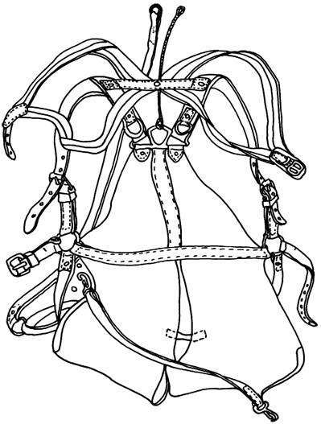
Sacul de transport GRAMINGHER
Este folosit la evacuarea victimelor din pereţi, în cazul în care acestea nu au suferit accidente greve, cum ar fi afecţiuni ale coloanei sau craniului.